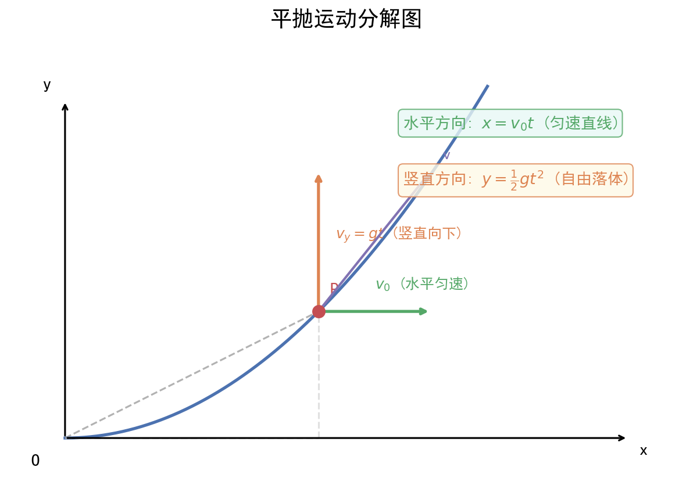

核心内容
关键概念
- 曲线运动条件：速度方向与合力方向不在同一直线上（加速度与速度不共线）
- 平抛运动：水平方向匀速直线运动，竖直方向自由落体运动，两个分运动独立进行
- 圆周运动：向心力 F向 = mv²/r = mω²r = m(2π/T)²r，方向始终指向圆心
- 万有引力：任何两个有质量的物体之间的吸引力，F = Gm₁m₂/r²
- 第一宇宙速度：7.9 km/s，最小发射速度、最大环绕速度
- 第二宇宙速度：11.2 km/s，脱离地球引力束缚
- 第三宇宙速度：16.7 km/s，脱离太阳引力束缚
- 同步卫星：周期T = 24h，轨道在赤道平面，高度约36000km，线速度约3.1km/s
- 双星问题：两颗星绕共同质心做圆周运动，角速度相等，向心力由彼此引力提供
核心公式/定理
平抛运动公式（分解法）
水平方向：x = v₀t，v_x = v₀（匀速）
竖直方向：y = ½gt²，v_y = gt（自由落体）
合速度：v = √(v₀² + v_y²)，方向 tanθ = v_y/v₀ = gt/v₀
合位移：s = √(x² + y²)，方向 tanα = y/x = gt/(2v₀)
重要推论：tanθ = 2tanα（速度偏角正切是位移偏角正切的2倍）
适用条件：只受重力，初速度水平，空气阻力可忽略
注意事项：平抛运动时间只由高度决定 t = √(2h/g)，与初速度无关；水平射程 x = v₀√(2h/g)
圆周运动公式体系
线速度：v = ωr = 2πr/T = 2πrf
向心加速度：a = v²/r = ω²r = ωv = (2π/T)²r
向心力：F向 = mv²/r = mω²r = mωv = m(2π/T)²r
适用条件：匀速圆周运动（速率不变，方向时刻变化）
注意事项：向心力是效果力，由某个或某几个实际力提供（如重力、弹力、摩擦力、万有引力等），不能说"物体受到向心力"
圆周运动临界条件
| 模型 | 最高点临界条件 | 最低点 |
|---|---|---|
| 轻绳模型（绳/轨道内侧） | v_min = √(gr)，T = 0（仅重力提供向心力） | T - mg = mv²/r |
| 轻杆模型（杆/管道） | v_min = 0，杆可提供向上或向下支持力 | T - mg = mv²/r |
| 圆锥摆 | 水平面内圆周运动，T sinθ = mω²(L sinθ) | — |
| 汽车过拱桥 | v_max = √(gr)，N = 0（飞离桥面） | N - mg = mv²/r |
| 汽车过凹桥 | — | N - mg = mv²/r（超重） |
万有引力定律与天体运动
万有引力：F = Gm₁m₂/r²
黄金代换：GM = gR²（近地表面，忽略自转）
卫星线速度：v = √(GM/r) = √(gR²/r) ∝ 1/√r
卫星角速度：ω = √(GM/r³) ∝ 1/√r³
卫星周期：T = 2π√(r³/GM) ∝ √r³（开普勒第三定律）
卫星加速度：a = GM/r² ∝ 1/r²
适用条件：中心天体模型（卫星绕行星、行星绕恒星）
注意事项：r为轨道半径（到中心天体球心的距离），不是天体表面半径；同步卫星轨道必须在赤道平面
双星问题公式
两颗星：m₁ω²r₁ = m₂ω²r₂ = Gm₁m₂/L²
且 r₁ + r₂ = L（两星间距）
质量比：m₁/m₂ = r₂/r₁（质心关系）
共同角速度：ω = √[G(m₁+m₂)/L³]
关键：双星角速度相等，向心力大小相等，轨道半径与质量成反比
宇宙速度
第一宇宙速度：v₁ = √(gR) = √(GM/R) ≈ 7.9 km/s
第二宇宙速度：v₂ = √2·v₁ ≈ 11.2 km/s
第三宇宙速度：v₃ ≈ 16.7 km/s
方法步骤
平抛运动"分解法"解题步骤
- 建立坐标：水平向右为x轴，竖直向下为y轴（或向上为y轴，此时g取负）
- 分方向列方程：水平匀速，竖直匀加速（自由落体）
- 找关联：两个方向的时间t相同，是联系两个分运动的桥梁
- 求合量：速度或位移的合成用勾股定理和三角函数
- 常用技巧：从速度偏角或位移偏角切入，利用 tanθ = 2tanα 快速求关系
圆周运动"供需分析"法
- 确定圆心：找到圆周运动的圆心位置
- 分析供力：分析物体受到的所有力，找出指向圆心方向的合力（"供"）
- 写需求：F供 = F需 = mv²/r = mω²r（"需"）
- 列方程：指向圆心为正方向，列牛顿第二定律方程
- 找临界：最高点/最低点/水平位置的特殊临界条件
天体运动"一绕二表三比较"法
- 判断模型：是绕行星转（卫星）还是表面问题（求g）
- 列方程：
- 绕行：GMm/r² = mv²/r = mω²r = m(2π/T)²r = ma
- 表面：GMm/R² = mg（忽略自转）→ GM = gR²
- 比大小：利用 v ∝ 1/√r、ω ∝ 1/√r³、T ∝ √r³、a ∝ 1/r² 快速比较不同轨道卫星的物理量
- 注意：同一中心天体，比较时GM为定值；不同中心天体需用 GM = gR² 代换
记忆口诀/技巧
"平抛分两头，水平匀速竖直落，时间看高度，射程看初速"
"绳球最高点根号下gr，杆球最高点可以为零" — 临界条件
"高轨低速长周期，大机大势小动能" — 卫星轨道规律（轨道越高，v、ω、a越小，T越大；机械能、引力势能越大，动能越小）
"GM=gR²，黄金代换要牢记，表面忽略自转才成立"
题型识别标志
看到什么条件 → 立刻想到什么方法/模型
| 题干关键条件 | 识别为 | 首选方法 |
|---|---|---|
| "水平抛出""高度差 $h$、初速度 $v_0$""平抛" | 平抛运动 | 分解：水平 $x=v_0t$，竖直 $y=\frac12gt^2$；时间 $t=\sqrt{2h/g}$ |
| "圆周运动最高点/最低点""绳/杆模型" | 圆周运动临界 | 轻绳 $v_{\min}=\sqrt{gr}$，轻杆 $v_{\min}=0$；牛顿第二定律 $F_{\text{向}}=mv^2/r$ |
| "卫星绕行星""周期 $T$、半径 $r$""同步卫星" | 万有引力天体 | $GMm/r^2=mv^2/r=m\omega^2r=m(2\pi/T)^2r$；黄金代换 $GM=gR^2$ |
| "探测器亮度周期性变化（行星遮挡）" | 天体公转周期/半径 | 由遮挡时长推周期 $T$，再 $r=\sqrt[3]{GMT^2/4\pi^2}$ |
| "圆锥摆""水平面内圆周" | 匀速圆周（供需分析） | 竖直方向平衡 + 水平方向 $T\sin\theta=m\omega^2r$ |
| "斜抛最高点""速度反向延长线过水平位移中点" | 斜抛/平抛几何 | 平抛 $\tan\theta=2\tan\alpha$；反向延长线过中点 |
解题路径（曲线运动三步法 + 万有引力"一绕二表三比较"）
广东卷常以"北斗导航、嫦娥探月、空间站、无人机抛投"为情境，平抛与圆周临界是高频难点。
第一步：判定运动模型
- 平抛/类平抛 → 分解为匀速 + 匀加速，时间 $t$ 是两方向桥梁。
- 圆周 → 找圆心、定半径，判临界（绳/杆/拱桥模型）。
- 天体 → 判断是绕行（卫星）还是表面（求 $g$）。
第二步：列核心方程
- 平抛：$x=v_0t,\ y=\frac12gt^2,\ v_y=gt,\ \tan\theta=\dfrac{v_y}{v_0}=2\tan\alpha$
- 圆周：$F_{\text{供}}=F_{\text{需}}=m\dfrac{v^2}{r}=m\omega^2r$
- 天体：$G\dfrac{Mm}{r^2}=m\dfrac{v^2}{r}=m\omega^2r=m\dfrac{4\pi^2}{T^2}r$
第三步：临界与比较
- 圆周临界：最高点 $v_{\min}=\sqrt{gr}$（绳），或 $v_{\min}=0$（杆）。
- 天体比较：同中心天体时 $v\propto1/\sqrt r,\ \omega\propto1/\sqrt{r^3},\ T\propto\sqrt{r^3},\ a\propto1/r^2$。
母题（2021 广东选择性考试·第4题，6分）
广东卷平抛运动典型题：以"长征途中投手榴弹"为情境，综合考查平抛时间、重力功率与机械能守恒（多选题）。
题目：长征途中，为了突破敌方关隘，战士爬上陡峭的山头，居高临下向敌方工事内投掷手榴弹。战士在同一位置先后投出甲、乙两颗质量均为 $m$ 的手榴弹，手榴弹从投出位置到落地点的高度差为 $h$，在空中的运动可视为平抛运动，轨迹如图所示，重力加速度为 $g$。下列说法正确的有（ ） A. 甲在空中的运动时间比乙的长 B. 两手榴弹在落地前瞬间，重力的功率相等 C. 从投出到落地，每颗手榴弹的重力势能减少 $mgh$ D. 从投出到落地，每颗手榴弹的机械能变化量为 $\frac12mv^2$（动能增量）
解：
- 平抛运动时间由高度决定：$t=\sqrt{2h/g}$，两弹高度差相同 → 时间相等，A 错。
- 落地前瞬间重力功率 $P=mg\cdot v_y=mg\cdot gt=mg^2t$，与时间成正比、与质量成正比，两弹 $m,h$ 相同 → 功率相等，B 对。
- 重力做功 $W_G=mgh$ → 重力势能减少 $mgh$，C 对。
- 平抛过程只有重力做功，机械能守恒，变化量为 0，D 错。
答：选 BC。
💡 关键：平抛"时间看高度"是首要结论；重力瞬时功率用 $P=mgv_y$（竖直分量），不是 $mgv$；机械能守恒前提是"只有重力做功"。
关联卡片
- 高一筑基_物理_核心知识网络_牛顿三定律与受力分析 — 圆周运动向心力由牛顿定律分析，万有引力提供天体向心力
- 高一筑基_物理_核心知识网络_功和能与功能关系 — 天体运动中的机械能守恒（只受万有引力）
- 高二深化_物理_核心知识网络_电场公式体系 — 带电粒子在电场中的类平抛运动
- 高二深化_物理_核心知识网络_磁场公式体系 — 带电粒子在磁场中的圆周运动
备注
- 广东情境化命题常见素材：
- 北斗导航系统（卫星轨道、周期、速度比较）
- 嫦娥探月工程（月球表面重力加速度、月球卫星轨道）
- 中国空间站（轨道高度、运行周期、航天员失重）
- 大湾区卫星通信（同步卫星、轨道参数）
- 广东沿海过山车/摩天轮（圆周运动临界条件）
- 无人机抛投物资（平抛运动）
- 易错点：
- 同步卫星高度约36000km，轨道半径约42000km（不是36000km）
- 第一宇宙速度是最大环绕速度、最小发射速度；轨道越高卫星速度越小
- 黄金代换 GM = gR² 仅适用于忽略自转的天体表面
- 双星问题中，两星轨道半径之和等于间距，且与质量成反比
- 平抛运动的速度反向延长线过水平位移中点（重要几何结论）
- 斜抛运动最高点速度不为零，等于水平初速度分量
- 开普勒三定律：
- 第一定律：行星轨道为椭圆，太阳在椭圆焦点上
- 第二定律：行星与太阳连线在相等时间内扫过相等面积（近快远慢）
- 第三定律：T²/r³ = k（k与中心天体质量有关）
- 等级赋分提示：万有引力选择题常考"轨道比较"，掌握"高轨低速长周期"口诀可快速解题；圆周运动临界条件需结合能量守恒分析，注意绳/杆模型的区别